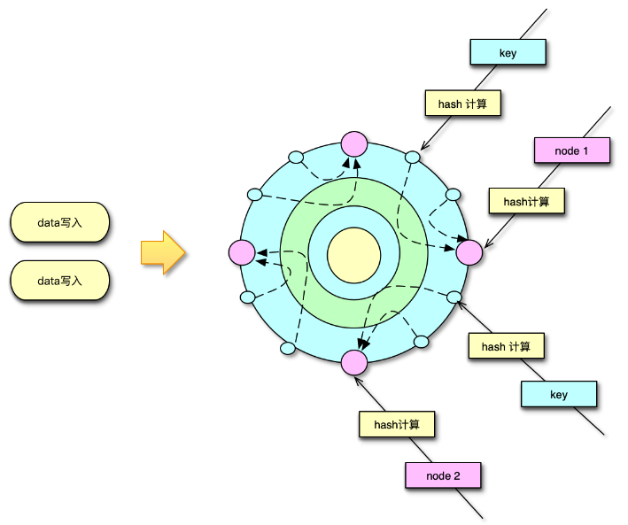
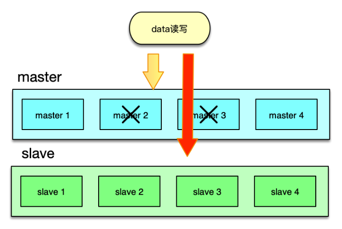
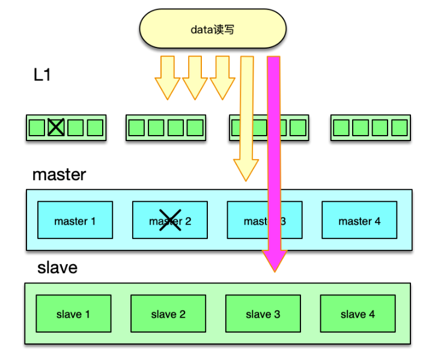
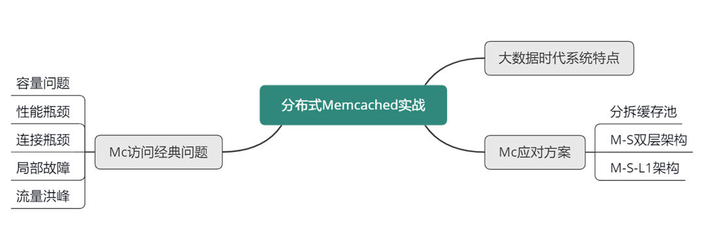

- 00 开篇寄语：缓存，你真的用对了吗？.md.html
- 01 业务数据访问性能太低怎么办？.md.html
- 02 如何根据业务来选择缓存模式和组件？.md.html
- 03 设计缓存架构时需要考量哪些因素？.md.html
- 04 缓存失效、穿透和雪崩问题怎么处理？.md.html
- 05 缓存数据不一致和并发竞争怎么处理？.md.html
- 06 Hot Key和Big Key引发的问题怎么应对？.md.html
- 07 MC为何是应用最广泛的缓存组件？.md.html
- 08 MC系统架构是如何布局的？.md.html
- 09 MC是如何使用多线程和状态机来处理请求命令的？.md.html
- 10 MC是怎么定位key的.md.html
- 11 MC如何淘汰冷key和失效key.md.html
- 12 为何MC能长期维持高性能读写？.md.html
- 13 如何完整学习MC协议及优化client访问？.md.html
- 14 大数据时代，MC如何应对新的常见问题？.md.html
- 15 如何深入理解、应用及扩展 Twemproxy？.md.html
- 16 常用的缓存组件Redis是如何运行的？.md.html
- 17 如何理解、选择并使用Redis的核心数据类型？.md.html
- 18 Redis协议的请求和响应有哪些“套路”可循？.md.html
- 19 Redis系统架构中各个处理模块是干什么的？.md.html
- 20 Redis如何处理文件事件和时间事件？.md.html
- 21 Redis读取请求数据后，如何进行协议解析和处理.md.html
- 22 怎么认识和应用Redis内部数据结构？.md.html
- 23 Redis是如何淘汰key的？.md.html
- 24 Redis崩溃后，如何进行数据恢复的？.md.html
- 25 Redis是如何处理容易超时的系统调用的？.md.html
- 26 如何大幅成倍提升Redis处理性能？.md.html
- 27 Redis是如何进行主从复制的？.md.html
- 28 如何构建一个高性能、易扩展的Redis集群？.md.html
- 29 从容应对亿级QPS访问，Redis还缺少什么？.md.html
- 30 面对海量数据，为什么无法设计出完美的分布式缓存体系？.md.html
- 31 如何设计足够可靠的分布式缓存体系，以满足大中型移动互联网系统的需要？.md.html
- 32 一个典型的分布式缓存系统是什么样的？.md.html
- 33 如何为秒杀系统设计缓存体系？.md.html
- 34 如何为海量计数场景设计缓存体系？.md.html
- 35 如何为社交feed场景设计缓存体系？.md.html
14 大数据时代，MC如何应对新的常见问题？
你好，我是你的缓存课老师陈波，欢迎进入第 14 课时“Memcached 经典问题及解决方案”的学习。
大数据时代 Memcached 经典问题
随着互联网的快速发展和普及，人类进入了大数据时代。在大数据时代，移动设备全面融入了人们的工作和生活，各种数据以前所未有的 速度被生产、挖掘和消费。移动互联网系统也不断演进和发展，存储、计算和分析这些海量数据，以满足用户的需要。在大数据时代，大中型互联网系统具有如下特点。
- 首先，系统存储的数据量巨大，比如微博系统，每日有数亿条记录，历史数据达百亿甚至千亿条记录。
- 其次，用户多，访问量巨大，每日峰值流量高达百万级 QPS。
- 要存储百千亿级的海量数据，同时满足大量用户的高并发访问，互联网系统需要部署较多的服务实例，不少大中型互联网系统需要部署万级，甚至十万级的服务实例。
- 再次，由于大数据时代，社会信息获取扁平化，热点事件、突发事件很容易瞬间引爆，引来大量场外用户集中关注，从而形成流量洪峰。
- 最后，任何硬件资源都有发生故障的概率，而且存在 4 年故障效应，即服务资源在使用 4 年后，出现故障的概率会陡增；由于大中型互联网系统的部署，需要使用大量的服务器、路由器和交换机，同时部署在多个地区的不同 IDC，很多服务资源的使用时间远超 4 年，局部出现硬件故障障、网络访问异常就比较常见了。
由于互联网系统会大量使用 Memcached 作为缓存，而在使用 Memcached 的过程中，同样也会受到前面所说的系统特点的影响，从而产生特有的经典问题。
容量问题
第一个问题是容量问题。Memcached 在使用中，除了存储数据占用内存外，连接的读写缓冲、哈希表分配、辅助线程处理、进程运行等都会占用内存空间，而且操作系统本身也会占用不少内存，为了确保 Mc 的稳定运行，Mc 的内存设置，一般设为物理内存的 80%。另外，设置的内存，也不完全是存储有效数据，我上一节课讲到，每个 Item 数据存储在 chunk 时，会有部分字节浪费，另外 key 在过期、失效后，不是立即删除，而是采用延迟淘汰、异步 LRU 队尾扫描的方式清理，这些暂时没有淘汰的、过期失效的 key ，也会占用不少的存储空间。当前大数据时代，互联网系统中的很多核心业务，需要缓存的热数据在 300~500GB 以上，远远超过单机物理内存的容量。
性能瓶颈
第二个问题是性能瓶颈问题。出于系统稳定性考虑，线上 Mc 的访问，最大 QPS 要在 10~20w 以下，超过则可能会出现慢查的问题。而对中大型互联网系统，核心业务的缓存请求高达百万级 QPS，仅仅靠简单部署单个物理机、单个资源池很难达到线上的业务要求。
连接瓶颈
第三个问题是连接瓶颈的问题。出于稳定性考虑，线上 Mc 的连接数要控制在 10w 以下。以避免连接数过多，导致连接占用大量内存，从而出现命中率下降、甚至慢查超时的问题。对于大中型系统，线上实例高达万级、甚至十万级，单个实例的最小、最大连接数，一般设置在 5~60 个之间。业务实例的连接数远超过单个机器的稳定支撑范围。
硬件资源局部故障
第四个问题是硬件资源局部故障，导致的缓存体系的可用性问题。由于任何硬件资源，都有一定故障概率，而且在使用 4 年后，故障率陡增。对于数以万计的硬件设备，随时都有可能出现机器故障，从而导致 Mc 节点访问性能下降、宕机，海量访问穿透到 DB，引发 DB 过载，最终导致整个系统无法访问，引发雪崩现象。
流量洪峰下快速扩展
第五个问题是在流量洪峰的场景下，如何快速扩展的问题。大数据时代，由于信息扩散的扁平化，突发事件、重大活动发生时，海量用户同时蜂拥而至，短时间引发巨大流量。整个系统的访问量相比日常峰值增大 70% 以上，同时出现大量的极热 key 的访问，这些极热 key 所在的 Mc 节点，访问量相比日常高峰，增大 2~3 倍以上，很容易出现 CPU 飙升、带宽打满、机器负荷严重过载的现象。
Memchcaed 经典问题及应对方案
为了解决大中型互联网系统在使用 Mc 时的这些问题。我们可以使用下面的解决方案。
Memcached 分拆缓存池
首先对系统内的核心业务数据进行分拆，让访问量大的数据，使用独立的缓存池。同时每个缓存池 4~8 个节点，这样就可以支撑足够大的容量，还避免单个缓存节点压力过大。对于缓存池的分布策略，可以采用一致性哈希分布和哈希取模分布。
一致性哈希分布算法中，首先计算 Mc 服务节点的哈希值，然后将其持续分散配置在圆中，这样每个缓存节点，实际包括大量大小各异的 N 个 hash 点。如下图所示，在数据存储或请求时，对 key 采用相同的 hash 算法，并映射到前面的那个圆中，从映射位置顺时针查找，找到的第一个 Mc 节点，就是目标存取节点。

而哈希取模分布算法，则比较简单，对 key 做 hash 后，对 Mc 节点数取模，即可找到待存取的目标 Mc 节点。
系统运行过程中，Mc 节点故障不可避免，有时候甚至短期内出现多次故障。在 Mc 节点故障下线后，如果采用一致性 hash 分布，可以方便得通过 rehash 策略，将该 Mc 节点的 hash 点、访问量，均匀分散到其他 Mc 节点。如果采用取模分布，则会直接导致 1/N 的访问 miss，N 是 Mc 资源池的节点数。
因此，对于单层 Mc 缓存架构，一致性 hash 分布配合 rehash 策略，是一个更佳的方案。通过将业务数据分拆到独立 Mc 资源池，同时在每个资源池采用合适的分布算法，可以很好的解决 Mc 使用中容量问题、性能瓶颈问题，以及连接瓶颈问题。
Master-Slave 两级架构
在系统的访问量比较大，比如峰值 QPS 达到 20w 以上时，如果缓存节点故障，即便采用一致性 hash，也会在一段时间内给 DB 造成足够大的压力，导致大量慢查询和访问超时的问题。另外，如果某些缓存服务器短期多次故障，反复上下线，多次 rehash 还会产生脏数据。对此，可以采用 Master-Slave 的两级架构方案。
在这种架构方案下，将业务正常访问的 Memcached 缓存池作为 master，然后在 master 之后，再加一个slave 资源池作 master 的热备份。slave 资源池也用 6~8 个节点，内存设置只用 master 的 1/2~1/3 即可。因为 slave 的应用，主要是考虑在 master 访问 miss 或异常时，Mc 缓存池整体的命中率不会过度下降，所以并不需要设置太大内存。
日常访问，对于读操作，直接访问 master，如果访问 miss，再访问 slave。如果 slave 命中，就将读取到的 key 回写到 master。对于写操作，set、touch 等覆盖类指令，直接更新master 和 slave；而 cas、append 等，以 master 为准，master 在 cas、add 成功后，再将 key 直接 set 到 slave，以保持 master、slave 的数据一致性。
如下图，在 master 部分节点异常后，由 slave 层来承接。任何一层，部分节点的异常，不会影响整体缓存的命中率、请求耗时等 SLA 指标。同时分布方式采用哈希取模方案，mc 节点异常不rehash，直接穿透，方案简洁，还可以避免一致性 hash 在 rehash 后产生的脏数据问题。

Master-Slave 架构，在访问量比较大的场景下，可以很好得解决局部设备故障的问题。在部分节点异常或访问 miss 时，多消耗 1ms 左右的时间，访问 slave 资源，实现以时间换系统整体可用性的目的。
M-S-L1 架构
20世纪初，意大利统计学家帕累托提出来一个观点：在任何特定群体中，重要的因子通常只占少数，而不重要的因子则占多数，因此只要能控制具有重要性的少数因子，即能控制全局。这个理论经过多年演化，就成为当前大家所熟悉的 80/20 定律。80/20 定律在互联网系统中也广泛存在，如 80% 的用户访问会集中在系统 20% 的功能上，80% 的请求会集中在 20% 的数据上。因此，互联网系统的数据，有明显的冷热区分，而且这个冷热程度往往比 80/20 更大，比如微博、微信最近一天的数据，被访问的特别频繁，而一周前的数据就很少被访问了。而且最近几天的热数据中，部分 feed 信息会被大量传播和交互，比其他 大部分数据的访问量要高很多倍，形成明显的头部请求。
头部请求，会导致日常大量访问，被集中在其中一小部分 key 上。同时，在突发新闻、重大事件发生时，请求量短期增加 50~70% 以上，而这些请求，又集中在 突发事件的关联 key 上，造就大量的热 key 的出现。热 key 具有随机性，如果集中在某少数几个节点，就会导致这 些节点的压力陡增数倍，负荷严重过载，进而引发大量查询变慢超时的问题。
为了应对日常峰值的热数据访问，特别是在应对突发事件时，洪峰流量带来的极热数据访问，我们可以通过增加 L1 层来解决。如下图所示，L1 层包含 2~6 组 L1 资源池，每个 L1 资源池，用 4~6 个节点，但内存容量只要 Master 的 1/10 左右即可。

如图，读请求时，首先随机选择一个 L1 进行读取，如果 miss 则访问 master，如果 master 也 miss，最后访问 slave。中途，只要任何一层命中，则对上一层资源池进行回写。
写请求时，同 Master-Slave 架构类似，对于 set 覆盖类指令，直接 set 三层所有的资源池。对于 add/cas/append 等操作，以 master 为准，master 操作成功后，将最后的 key/value set 到 L1 和 slave 层所有资源池。
由于 L1 的内存只有 master 的 1/10，且 L1 优先被读取，所以 L1 中 Memcached 只会保留最热的 key，因为 key 一旦稍微变冷，就会排到 COLD LRU 队尾，并最终被剔除。虽然 L1 的内存小，但由于 L1 里，永远只保存了 系统访问量 最大最热的数据，根据我们的统计， L1 可以满足整个系统的 60~80% 以上的请求数据。这也与 80/20 原则相符合。
master 存放全量的热数据，用于满足 L1 读取 miss 或异常后的访问流量。slave 用来存放绝大部分的热数据，而且与 master 存在一定的差异，用来满足 L1、master 读取 miss 或异常的访问流量。
这里面有个可以进一步优化的地方，即为确保 master、slave 的热度，让 master、slave 也尽可能只保留最热的那部分数据，可以在读取 L1 时，保留适当的概率，直接读取 master 或slave，让最热的 key 被访问到，从而不会被 master、slave 剔除。此时，访问路径需要稍做调整，即如果首先访问了 master，如果 miss，接下来只访问 slave。而如果首先访问了 slave，如果 miss，接下来只访问 master。 通过 Master-Slave-L1 架构，在流量洪峰到来之际，我们可以用很少的资源，快速部署多组L1资源池，然后加入 L1 层中，从而让整个系统的抗峰能力达到 N 倍的提升。从而以最简洁的办法，快速应对流量洪峰，把极热 key 分散到 N 组 L1 中，每个 L1 资源池只用负责 1/N 的请求。除了抗峰，另外，还可以轻松应对局部故障，避免雪崩的发生。
本课时，讲解了大数据时代下大中型互联网系统的特点，访问 Memcached 缓存时的经典问题及应对方案；还讲解了如何通过分拆缓存池、Master-Slave 双层架构，来解决 Memcached 的容量问题、性能瓶颈、连接瓶颈、局部故障的问题，以及 Master-Slave-L1 三层架构，通过多层、多副本 Memcached 体系，来更好得解决突发洪峰流量和局部故障的问题。
可以参考下面的思维导图，对这些知识点进行回顾和梳理。
